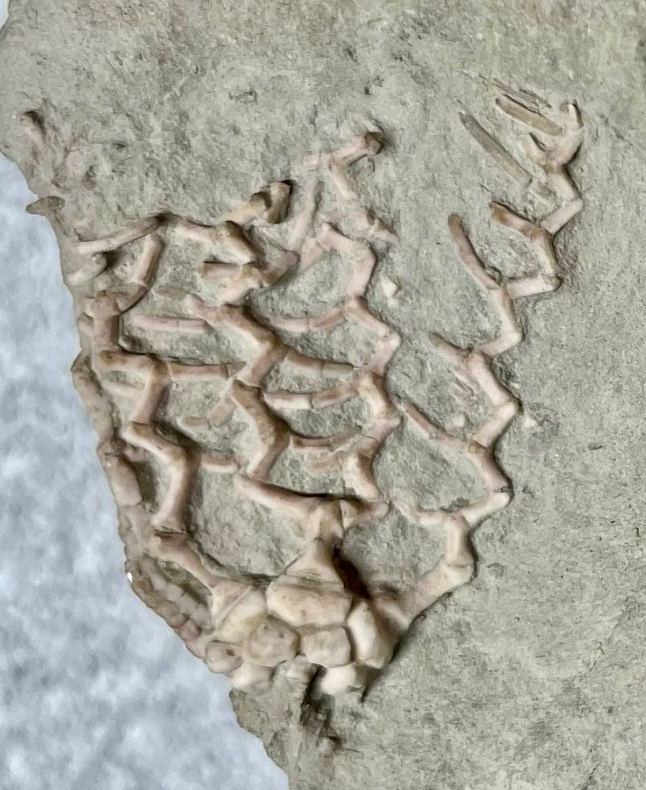

Clathrocrinus clathratus
Pennsylvanian
LaSalle Limestone, Bond Formation
Pontiac/Ocoya, Illinois, USA
Size: 3.5 cm crown
This is surely one of the most bizzare and beautiful crinoids within the Pontiac fauna. The brachials of "C. clathratus" are extraordinarily elongated and articulate with each other at nearly 90-degree angles. As a result, the arms form prominent zig-zag patterns which overall give the crown a cage-like (or "trellis"-like, as Strimple described) appearance. Evidently one of the more extreme approaches taken by the rising cladids in pursuing various filter-feeding niches.
|

|
Copyright © 2024 by Samuel Kim, all rights reserved